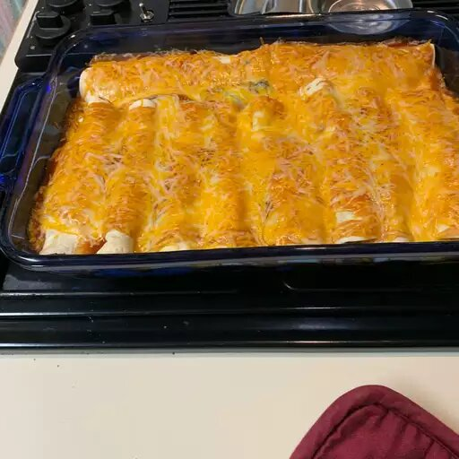

This Spinach Enchiladas recipe describes an easy step by step procedure to prepare easy spinach enchiladas with ricotta cheese and spinach.
If you like spinach and Mexican food, you'll love these!
Preheat the oven to 375 degrees F (190 degrees C).
Melt butter in a saucepan over medium heat. Add green onions and garlic; cook and stir until fragrant,2 to 3 minutes.
Remove from the heat and mix in 1 cup Monterey Jack.
Warm one tortilla in a skillet over medium heat until flexible, about 15 seconds.
Repeat to warm remaining tortillas. Spoon about 1/4 cup spinach mixture onto the centre of each tortilla,
roll tortilla around filling, and place into a 9x13-inch baking dish with the seam facing down.
Pour enchilida sauce over top and sprinkle with re,aining 1 cup Monterey Jack.
Bake in the preheated oven until saucs is bubbling and cheese is lightly browned at the edges, 15 to 20 minutes.
| Nutrients | % Daily value |
|---|---|
| Total fat: 36g | 46% |
| Saturated fat: 21g | 103% |
| Cholestrol: 95mg | 32% |
| Total carbohydrates: 32g | 12% |
| Sodium: 345mg | 15% |
| Dietry fiber:6g | 21% |
| Total sugars:1g | |
| Protein:18g | |
| Vitamin C: 14mg | 72% |
| calcuim: 513mg | 39% |
| Iron:3mg | 14% |
| Potassium: 540mg | 11% |